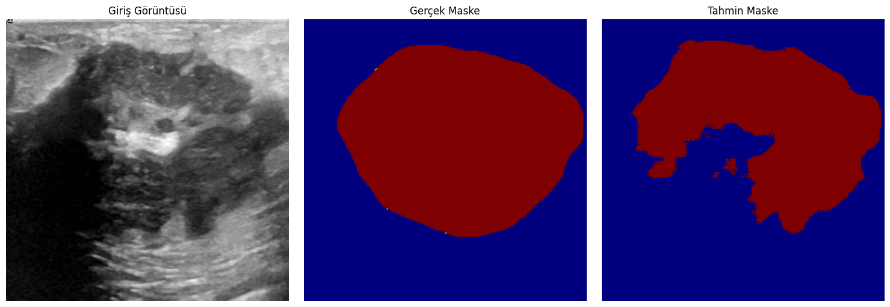

Giriş Görüntüsü #1
Ultrason görüntüsü - Normal doku
Doğruluk: 96%

Maske Görüntüsü #1
Gerçek ve tahmin maskesi karşılaştırması
IoU: 0.92

Giriş Görüntüsü #2
Ultrason görüntüsü - Şüpheli bölge
Doğruluk: 93%
Maske Görüntüsü #2
Gerçek ve tahmin maskesi karşılaştırması
IoU: 0.88
Giriş Görüntüsü #3
Ultrason görüntüsü - Kitle tespiti
Doğruluk: 95%

Maske Görüntüsü #3
Gerçek ve tahmin maskesi karşılaştırması
IoU: 0.90